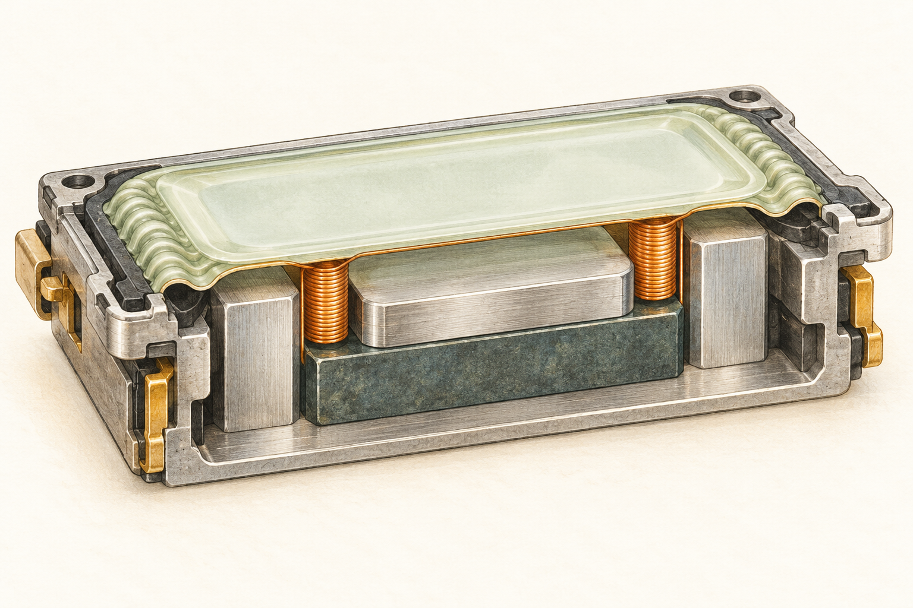

01 / Sound · Part
How a phone
makes sound.
A tiny moving system, hiding in plain sight.
01Speaker
illustrated field guide

An illustrated concept. Select a number; the outlined coil path opens its article.
Diaphragm + surround
A thin membrane moves the air. Its flexible edge lets the center travel while holding it to the frame.
The idea in motion
What moves?
What stays still?
Current changes direction. The coil feels a force inside the fixed magnetic gap. The membrane travels with it, pushing and pulling the air.

From parts to a working speaker
Put the system together.
Four steps. One continuous story.
Follow a Part or Tool link to its making article.
Build the fixed magnetic system.
Result → a stable magnetic gapDashed arrows trace a field path; the field itself is static.
Place the Partpermanent magnet ↗ and Partiron pole + return parts ↗ in the Partframe ↗. The magnet supplies the field; the iron guides its flux toward the coil’s intended air gap.
The Toolalignment fixture ↗ supports the fixed parts against a reference while selected joints are formed with Partadhesive ↗. The fixture is an external tool; it is removed from the speaker.
Check that the fixed assembly leaves a clear, even route for the moving coil. This comes before adding the film, because the gap must remain accessible for alignment.
What does the tool control?
The fixture controls position during assembly; it does not supply magnetic flux. Dimensional requirements come from the intended speaker design. The magnet and iron have separate making chains.
Join the coil and membrane.
Result → one moving assemblySeparate parts → a coil, a membrane and a controlled bond.
Guide Partinsulated wire ↗ around the Toolwinding fixture ↗ to form the Partcopper voice coil ↗. The mandrel provides a repeatable reference shape; its guides support the wire as turns are formed. Insulation keeps neighboring turns electrically separate.
Release the formed coil from the reference, then support it while bonding it to the underside of the Partdiaphragm + surround ↗ with Partadhesive ↗. Keep the compliant edge free to flex.
The fixture’s job ends when the part can hold its intended shape. It does not stay inside the moving assembly.
Why keep the moving assembly light?
The coil, film and their bonds contribute to the moving assembly. Its mass and suspension influence the response, so bonding must support the joint without unnecessarily restricting motion.
Center and seal the moving assembly.
Result → supported, free motionUse the Toolalignment fixture ↗ and removable guides to hold the moving assembly at its intended rest position. Lower the Partvoice coil ↗ into the magnetic air gap between the Partfixed iron surfaces ↗; the Partmagnet ↗ remains fixed.
Bond the Partsurround ↗ to the Partframe ↗ with Partadhesive ↗. The frame anchors the outer edge while the membrane center remains able to travel.
Remove the guides after the joints can support the intended position. Check that the coil stays clear of the fixed iron and that the intended chamber edges are sealed.
Tool use and tool making are different pages
This step uses the alignment fixture to hold a position. Its linked article instead makes the fixture from a base, guide parts and locators, using fabrication and measurement tools.
Connect the circuit. Test the sound.
Result → checked electrical + acoustic behaviorA meter checks continuity and DC resistance. No resistance target is specified in this conceptual model.
Join the coil to Partterminals + flexible leads ↗. Use a ToolMeter ↗ across the electrical path to check continuity and DC resistance. The leads must carry current while allowing the moving assembly to travel.
For the motion check, the ToolAudio signal source ↗ defines a test signal. The ToolAudio amplifier ↗ drives the coil using energy supplied by a ToolPower source ↗.
A ToolMeasurement microphone ↗ observes the sound for the acoustic check. Check free movement and rub-buzz, then the intended acoustic response. Each device has a distinct job and its own making article.
What are these demonstrations measuring?
The controls explain which tools participate in each check. The drawings and traces are conceptual, not recorded test data or pass certificates. Actual drive limits, target resistance and acoustic targets depend on the chosen speaker design.
Keep following the making path
Parts, and the tools that make them.
Every child uses the same article layout and returns to its caller.